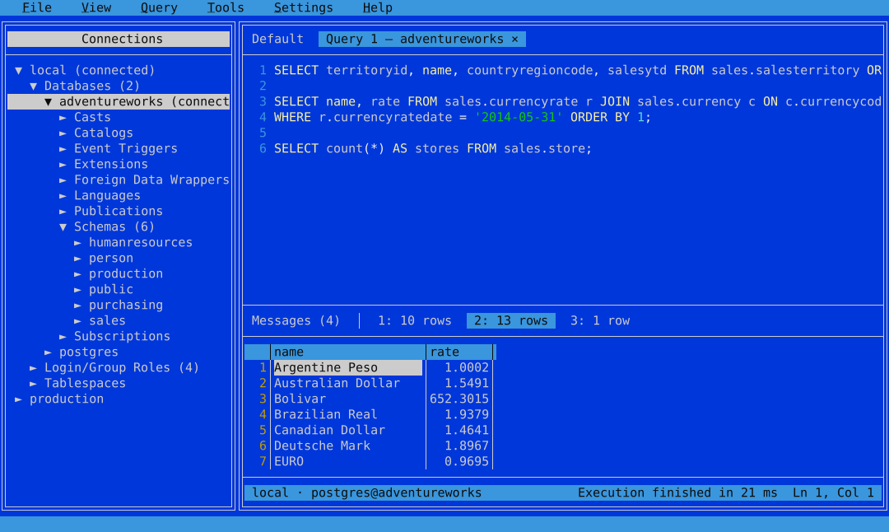
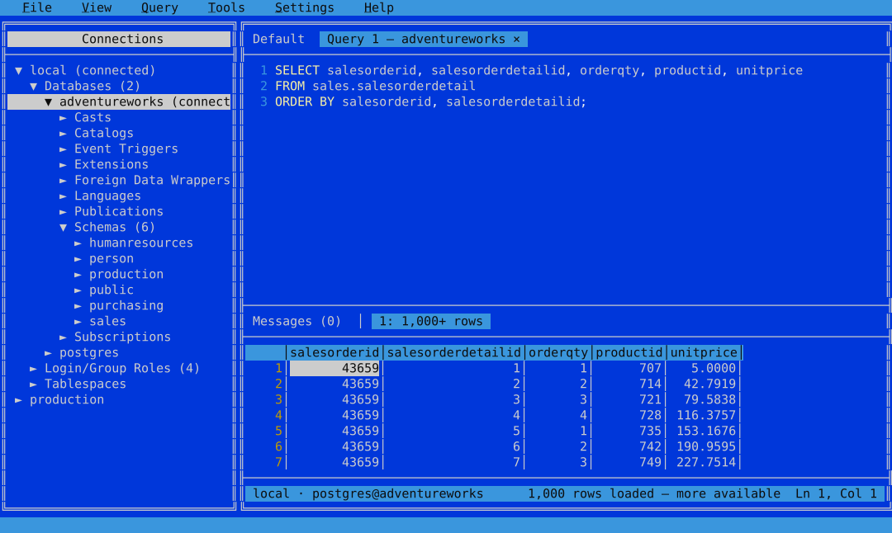
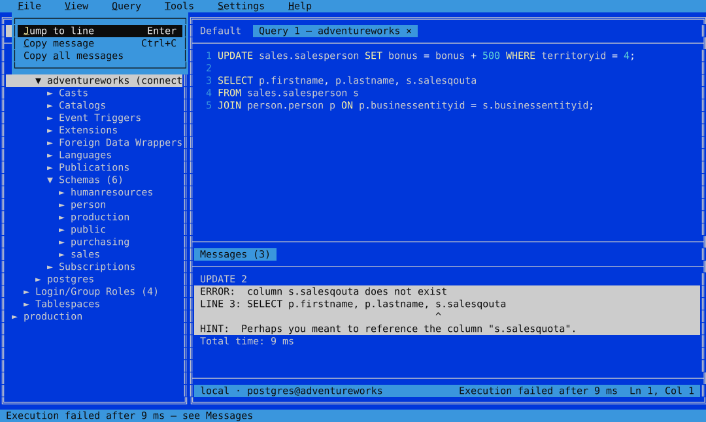
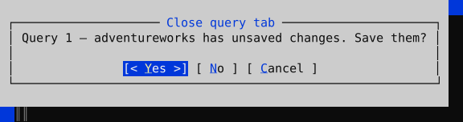

Query tabs
A query tab is an editor with its own session on one database. This chapter covers execution (simple query protocol), result sets and row batches, messages and error positions, the cancel request, transaction handling, PL/pgSQL mode, and what happens to the session when a tab closes.

Opening a query tab
A query tab is bound to one database, taken from the tree selection:
- Put the tree cursor on a database, or on any object below it (a schema, a table, a column…).
- Press Ctrl+N — from any part of the window. Or: , or in the context menu (F2).
The tab is named Query 1 – adventureworks and opens its own session on that database, with the connection parameters and role of the saved connection (see The sessions pgtc opens on the server). The cursor is in the editor. Messages shows Connecting… and then Connected to ….
- With the cursor on a server row or on Login/Group Roles / Tablespaces no database is selected: Ctrl+N only shows a hint in the status line.
- Any number of query tabs can be open, also several on the same database. Each is a separate backend with its own transaction, session settings, temporary objects and locks.
- Other commands that open a query tab: Ctrl+B on a table (first 100 rows), Ctrl+E on an object (its definition), (a file).
The parts of a query tab
| Part | Content |
|---|---|
| File bar | Only when the tab has a file: its full path, with * while there are unsaved changes. |
| Editor | The SQL text. See SQL editor and autocomplete. |
| Results bar | Messages (n), then one label per result set: 1: 12 rows, 2: 1,000+ rows. |
| Results | The grid of the selected result set, or the messages. |
| Tab status row | Left: connection name, role and database (local · postgres@adventureworks), the transaction status, PL/pgSQL when that mode is on. Then the state of the run. Right: the cursor position. |
| Key | Action |
|---|---|
| Alt+Down / Alt+Up | Focus from the editor to the results, and back. |
| Ctrl+R | Hides the results pane (the editor gets the whole tab) or shows it again. |
| Alt+Shift+Up / Alt+Shift+Down | Makes the results pane smaller / larger. With the mouse: drag the line above the results bar. |
| F6 | To the object tree and back. |
Executing: F5
F5 (or ) sends
- the selected text, if there is a selection;
- otherwise the whole text of the editor.

To execute one statement of a script: put the cursor at its start, press Shift+End (or Shift+Down for several lines) to select it, then F5.
While the backend executes, the tab status row shows Executing… with the elapsed time and the cancel key:

Execution does not block the UI: other tabs, the tree and other query tabs stay usable, since each has its own session. Rows are displayed as they arrive. When the run ends, the status row says Execution finished in … or Execution failed after ….
Scripts: several statements at once
The text is sent unchanged as one simple-query message, as pgAdmin does; pgtc does not split it into statements. All values come back in text format. A multi-statement message that has no transaction control of its own is executed by the server as one implicit transaction block:
- if a statement fails, the effects of the statements before it are rolled back and the statements after it are not executed;
- statements that cannot run inside a transaction block —
VACUUM,CREATE DATABASE,CREATE INDEX CONCURRENTLY,ALTER SYSTEM— fail as part of a script. Send them alone: select just that statement and press F5; - a script with explicit
BEGIN/COMMITcontrols its transactions itself.
Each statement that returns a row description produces its own result set; each completed statement leaves its command tag in Messages.
Results
The results bar

SELECTs: three result sets. The second one is shown.Messages (n) is always the first label. After it comes one label per result set, with its number and
row count. The label of the displayed one is highlighted.
| Key | Action |
|---|---|
| Ctrl+PgDn / Ctrl+PgUp | Next / previous result set — also from the editor. Second keys: Alt+PgDn / Alt+PgUp. |
| Alt+M | Switches between the result set and Messages — also from the editor. |
| Alt+Right / Alt+Left | In the results: cycles through all labels, 1 → 2 → … → Messages → 1. |
| click | A label shows that result set. |
After every run the first result set is shown. A run without any result set (an UPDATE, DDL,
a DO block) ends on Messages; a SELECT returning zero rows is a result set and shows
its empty grid with the column names.
The grid
Move into the grid with Alt+Down. It has a cell cursor.
| Key | Action |
|---|---|
| Arrows | Move the cell cursor; the grid scrolls horizontally for wide results. |
| PgUp / PgDn | A page up / down. |
| Home / End | First / last column of the row. |
| Ctrl+Home / Ctrl+End | First / last loaded row. |
| Ctrl+C or Ctrl+Insert | Copies the value of the cell — the complete value, also when the grid shows it truncated. |
| Ctrl+A, then Ctrl+C | Copies the loaded rows of the result set: tab-separated, with a header row. |
| Alt+End | Fetch all rows (see below). |
| F2 | Context menu: Export result…, Fetch all. |
Display of values:
- Values are shown in the server's text output format, so they depend on session settings such as
DateStyle,IntervalStyleandbytea_output. - The first column is the row number.
[null], in a muted colour, is SQL NULL — distinct from an empty string.- Numeric types are right-aligned, everything else left-aligned.
- A column is as wide as its name and the values loaded so far, but at most 40 characters; a longer value ends
with
…. - A line break inside a value is shown as
↵, a tab as→. Copying gives the real characters.

Large results: 1,000 rows at a time

1,000+ rows, the status row
1,000 rows loaded – more available.pgtc reads the first 1,000 rows of a result set (the batch; the size is a setting), displays them, and then stops reading from the connection. This is plain backpressure on the socket: no cursor is declared and no transaction is needed, so it works for any statement and any script. The backend stays in the statement, blocked sending rows.
- Scrolling near the end of the loaded rows fetches the next batch automatically.
- Alt+End — — reads all remaining rows.
- The label shows
1,000+for as long as rows are pending.
A paused result is a statement that is still executing on the server. It holds its snapshot and its locks until it ends. It ends when all rows are fetched, on cancel (Alt+Shift+C), when the next statement is executed in the tab, or when the tab closes. Do not leave a paused result open for hours on a busy database.
While a result is paused, the tab's session is busy. Features that need it — autocomplete reading new names, F7 templates, the generate commands of F4 — ask you to finish or close the result first.
Closing a paused result. Executing the next statement (or Commit / Rollback) while a result is paused requires ending the running statement first:
- if nothing can be lost — no transaction was open when the run started and the result belongs to the first statement of the run — pgtc sends a cancel request and waits for it to be processed before the next request goes out;
- otherwise the remaining rows are read and discarded, because a cancel would abort the transaction and roll back what the script did before. Messages notes this, and the status row shows Closing the result…. For a very large result this takes as long as reading it; Alt+Shift+C then sends a real cancel request (which, like any cancel, aborts the transaction).
Messages

Messages is the log of the tab's last run, in order of arrival:
| Line | Meaning |
|---|---|
UPDATE 2, INSERT 0 5, CREATE TABLE, SELECT 13 | The command tag of each completed statement, as the server reports it. |
NOTICE: …, WARNING: …, INFO: … | Notice messages of the server, including RAISE output from PL/pgSQL, by severity. Which levels are sent depends on client_min_messages. They are displayed while the statement executes. |
ERROR: … | An error, with its DETAIL and HINT fields and the position in the editor text. |
BEGIN, ROLLBACK | Statements pgtc sent on its own for the tab's transaction switches (see Transactions). |
NOTIFY: channel "name" (pid 1234): payload | An asynchronous notification for a channel the session LISTENs on, with the PID of the notifying backend. It is shown when the server delivers it, also between runs. |
Total time: 21 ms | Elapsed time of the whole run, measured by pgtc. |
The number in Messages (n) is the message count. Move through them with Up / Down.
| Key | Action |
|---|---|
| Enter (or a double click) | On an error or notice with a known position: jumps to that line in the editor. |
| Ctrl+C | Copies the message under the cursor, with all its lines. |
| Ctrl+A, then Ctrl+C | Copies all messages. |
| F2 | Context menu: Jump to line, Copy message, Copy all messages. |
Errors

^, the
error position.When a statement fails:
- Messages is activated, and the bottom line of the window says Execution failed after … — see Messages;
- the error is followed — as in psql — by
LINE n:with the text of the line and a^under the error position. pgtc computes both from the error's position field; n is the line number in the editor, also when only a selection was sent; - the
DETAIL:andHINT:fields of the error follow; - result sets of statements that had already completed stay available in the results bar — but the implicit transaction of a failed script is rolled back as a whole.
Put the cursor on the error and press Enter: the focus moves to the editor at the error position and the token there is selected — correct it and press F5 again.

s.salesqouta is selected in the editor.This also works for errors raised inside a DO block and in PL/pgSQL mode, where the server
reports no position in the sent text: pgtc takes the line from the error's CONTEXT
(PL/pgSQL function inline_code_block line N …) and, for a failing SQL statement inside the block, the
column from the error's internal query and internal position. Positions are those at the time of the error; after
editing the text a jump may be off.

Cancelling a query
Alt+Shift+C — — sends PostgreSQL's cancel request for the tab's backend, over a separate connection, as Ctrl+C in psql does. The statement ends with ERROR: canceling statement due to user request, and the transaction it ran in is aborted.
- The same key ends a paused result and stops a running export.
- A backend does not always react to a cancel request — for example while it is blocked on the network. If the run has not ended after 5 seconds (a setting), pgtc asks: The server did not react to the cancel request. Close this query tab's session? — Close session drops the session (an open transaction is lost); Keep waiting waits on. Only this tab's session is affected. The tab keeps its text, and the next F5 opens a new session.
Transactions
Each query tab has two switches, in the menu ([x] marks a switch that
is on):
| Switch | Default | On | Off |
|---|---|---|---|
| Auto commit | on | pgtc sends no transaction control. Each run commits at its end if it did not fail — the server's autocommit behaviour, as in psql. | Before a run, if the session's transaction status is idle, pgtc sends BEGIN. The transaction block stays open until or . |
| Auto rollback on error | off | After a failed run that leaves a transaction block open, pgtc sends ROLLBACK. | The transaction stays in the failed state until it is rolled back. Until then the server rejects every statement (current transaction is aborted, commands ignored until end of transaction block). |
The switches of a new tab come from Settings; each tab then keeps its own.
Working with auto commit off

BEGIN pgtc sent; the tab is marked
(tx) and its status row says Transaction open.- Turn off .
- Execute the changes. Verify them with a
SELECTin the same tab — the same session sees its own uncommitted changes. - Choose or ; pgtc sends
COMMITorROLLBACK.
pgtc tracks the transaction status the server reports after every request and shows it:
| Tab label | Status row | Transaction status |
|---|---|---|
| Idle: not in a transaction block. | ||
(tx) | Transaction open | In a transaction block. Changes are uncommitted; the row and table locks taken so far are held. |
| Transaction aborted – ROLLBACK needed | In a failed transaction block. Choose . |
The status is the session's, however the block was opened: a BEGIN typed in the editor marks the tab
(tx) in the same way. Commit, Rollback and the two switches have no default key; they are
in the menu (F9, then Alt+Q) and can be bound in
keymap.toml. Executing COMMIT; or ROLLBACK;
from the editor is equivalent.
An open transaction holds its locks, and its snapshot can hold back VACUUM. The
dashboard lists such sessions as idle in transaction. Do not leave a tab of a
production database on (tx).
PL/pgSQL mode
In PL/pgSQL mode the editor text is the body of an anonymous code block: variables, IF, loops,
RAISE — executed directly, without creating a function.
- Press Ctrl+P in the query tab (or ). The tab label gets
[PL/pgSQL], the status row PL/pgSQL. - Write the block: an optional
DECLAREsection andBEGIN … END;. If the text has noBEGIN … END, pgtc adds it. - Press F5.

RAISE NOTICE is a line in Messages.pgtc sends the text as DO $pgc$ … $pgc$;. Consequences:
- no object is created, so no
CREATEprivilege on any schema is needed; RAISE NOTICE/INFO/WARNINGoutput appears in Messages while the block executes;- errors and notices jump to the corresponding editor line with Enter, as in SQL mode;
- a
DOblock returns no result set. To inspect data,RAISE NOTICEit, or write the rows into a temporary table and select from it in SQL mode (same tab, so the same session); - the text must not contain
$pgc$, the dollar-quote tag pgtc uses.
Ctrl+P again switches back to SQL mode. The mode is per tab. The transaction switches apply as in SQL
mode. The commands gtc and gtsi of the F4 command line
generate PL/pgSQL skeletons for a table.
Closing a query tab and quitting
Ctrl+W, a click on the tab's ×, or closes the
tab and ends its session. Two things can be lost, so pgtc asks about each:


| Question | Answers |
|---|---|
| … has unsaved changes. Save them? | Yes saves to the tab's file, or asks for a file name if it has none; the tab closes only after the file was written. No discards the text. Cancel keeps the tab open. |
| This query tab has an open transaction. | Commit sends COMMIT and then closes. Rollback closes; the server rolls the transaction back when the session ends. Cancel keeps the tab open. |
- The first question can be turned off: , Ask to save query tabs when closing. Unsaved text is then discarded without a question.
- A statement that is still executing is cancelled when its tab closes.
- Everything that lives in the session ends with it: session-level
SETs, temporary tables, prepared statements,LISTENregistrations, advisory locks. - Quitting (F10) asks the first question for each query tab with unsaved text, one tab at a time — the tab in question is shown — and then one question for all open transactions: Commit all / Rollback all / Cancel. Cancel at any point stops quitting.
- Disconnecting a server closes its query tabs with the same questions.
Good to know
- Lost session. If a tab's session is lost, the tab keeps its text and says not connected; the next F5 opens a new session — without the transaction, session settings and temporary objects of the old one. If the tab no longer knows its database, it asks you to select one in the tree.
COPY … FROM STDIN/TO STDOUT— the client side of the COPY protocol — is not supported yet; the server's error is shown.COPYto or from a file on the server works, as does exporting a result.- psql meta-commands (backslash commands) inside a script are not interpreted; the text goes to the server as it is. The everyday ones are available on F4 — see psql-style commands.
- Session state (
SET search_path …,SET ROLE …) belongs to the tab's session and lasts until the tab closes or the session is lost. Other tabs, the tree and the dashboard are not affected. - Extended query protocol. Editor text is always sent with the simple query protocol, so
$1-style parameters cannot be bound from the editor; usePREPARE/EXECUTE.